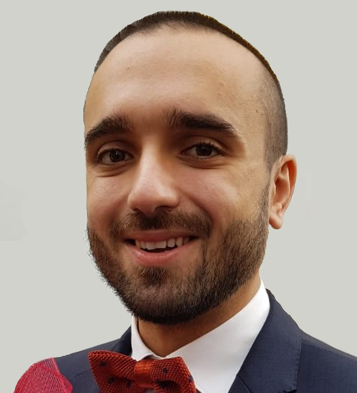

Elections y-SIS 2021 - Candidates
Pierfrancesco Alaimo Di Loro
My name is Pierfrancesco Alaimo Di Loro, and I am a Post-doctoral Researcher at the Statistical Sciences Dpt. of Sapienza University of Rome. My academic education, articulated between Sapienza and Universitè Paris-Dauphine, was mainly focused on Bayesian modeling and Markov Chain Monte-Carlo methods. Later, my research interests shifted towards the specific study of spatial and spatio-temporal phenomena. I joined Prof. Sudipto Banerjee at UCLA as a visiting researcher and, under his supervision, I had the chance to learn the tricks and ropes of Bayesian Hierarchical Modeling for large geo-referenced data. During this last year, I focused on the analysis and proper media communication of the Italian COVID-19 pandemic data with StatGroup-19; we gave emphasis to the interpretability, transparency, and reliability of our statistical findings. My current lines of research mostly involve the modeling of phenomena characterized by complex dependence structures, whether the observations are organized at point-referenced locations, at nodes on a lattice, or on an arbitrary network. Whatever the application field (epidemiology, environmental, social), my efforts are always dedicated to finding a medium between the model adherence to the actual data generation mechanism, and the reliability and feasibility of its estimation.
Fabio Centofanti

I am a post-doc researcher at the University of Naples Federico II, where I also completed my PhD in Industrial Engineering (XXXIII cycle) in September 2021, under the supervision of Profs. Biagio Palumbo and Simone Vantini. My research interests regard statistical methodology for the analysis of complex data in the Industry 4.0 framework. I am currently working on functional data analysis methods for regression, clustering, and statistical process control, with a particular focus on robustness and interpretability. During my PhD, I was visiting student at the Department of Mathematics of the Politecnico di Milano and at the Department of Applied Mathematics and Computer Science of the Technical University of Denmark.
Francesco Gaffi

I'm a PhD student in statistics at Bocconi University in Milano, advised by Antonio Lijoi and Igor Prünster. Previously, I studied mathematics at Università di Roma Tor Vergata, supervised by Domenico Marinucci. My research interests lie in mathematical methods for Bayesian nonparametrics. I'm currently working on linear functionals of random probability measures and hierarchical partitions for network data. I coordinate our research community reading group, which involves faculty, postdocs and PhD students affiliated to several universities all over the world. I'm a teaching assistant in statistics and probability for bachelor, master and PhD courses. I'm a member of the BayesLab of the Bocconi Institute for Data Science and Analytics (BIDSA) and of the MIDAS Complex Data Modeling Research Network. More info on my website [https://francescogaffi.github.io].
Angelo Moretti

I am Angelo Moretti, I am an Assistant Professor at the Department of Computing and Mathematics and Centre for Advanced Computational Science, Manchester Metropolitan University. I obtained a PhD in Social Statistics at the University of Manchester, Manchester, UK. My research is in survey statistics and methodology, in particular, small area estimation of social indicators. I am currently working on multivariate small area estimation problems as well as data integration (statistical matching and record linkage). My areas of applications are poverty, social exclusion and quantitative criminology. For more info about me, here is my webpage: https://www.mmu.ac.uk/computing-and-maths/staff/profile/index.php?id=4615
My areas of applications are poverty, social exclusion and quantitative criminology.
Andrea Nigri

Andrea is a postdoctoral researcher at the Department of Social and Political Sciences, Bocconi University. He works on developing and improving the statistical methodology in the field of statistical demography. He has an interdisciplinary background with training in statistics and its application to demographic research, obtained through a Ph.D. at Sapienza University of Rome and through the European Doctoral School of Demography, a pan-European Ph.D. training program held at the Max Planck Institute for Demographic Research and the University of Southern Denmark, which provided him with broad training with particular attention to mathematical and statistical demography. His research has served as a bridge between longevity analysis and statistical learning, introducing regression trees and neural networks as integration or complete replacement of traditional mortality models. His current research agenda contains two main strands: the indirect estimation of vital rates from summary demographic measures and causes-of-death modeling. Visit his blog for updates (https://andreanigri.wordpress.com); it covers research interests, as well as publications and presentations at academic conferences.
Paolo Pagnottoni

Paolo Pagnottoni is Post-doctoral Research Fellow in Statistics at the Department of Economics and Management of the University of Pavia. Previously Research Fellow at the Department of Management, Economics and Industrial Engineering of Politecnico di Milano, Paolo holds a B.Sc. from the University of Milan-Bicocca, a M.Sc. from the University of Pavia, a M.Sc. from the University of Tuebingen and a Ph.D. from the University of Bergamo and Pavia. Paolo is interested in various areas of applied and theoretical Statistics: Statistics of Financial Markets, Time Series Forecasting, Statistical properties of Networks, Bayesian Statistics, Statistical Physics. What he likes at most is the intersection of Statistical Methods with different disciplines, spanning from Physics, Complex Systems and Network Theory to Time Series Econometrics. He's also keen on applying statistical models to analyze and address problems of various nature: from socioeconomic and financial health, climatic risk modelling, to trying to make something out of weird experiments with cryptocurrencies. Paolo is always happily available for discussions, ideas, and chats; he would be happy to serve the young-SIS and propose initiatives to make it always more active, attractive, visible and inclusive for all members and potential participants.